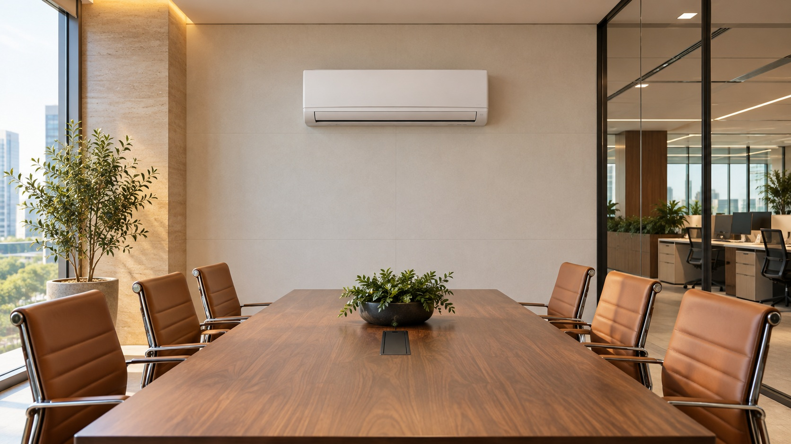

Para sua casa
O prazer de chegar e se sentir bem. Instalação e manutenção de split para casas, apartamentos e coberturas.
Cuidar da minha casaTOTAL AR · CLIMATIZAÇÃO
Instalação, manutenção e venda de ar-condicionado split para transformar a experiência de estar no seu ambiente.
Solicite seu orçamentoO split certo para o seu espaço
Conheça as opções para sua casa ou empresa e solicite uma cotação personalizada.

Experiência que inspira confiança
16 anos de experiência no ramo, a serviço do seu conforto.
A Total Ar reúne experiência em instalação e manutenção de split com um atendimento próximo, voltado às necessidades de cada espaço. Da escolha do aparelho ao cuidado no dia a dia, você encontra um contato para acompanhar cada etapa.
Conheça a Total ArAmbientes diferentes. O mesmo cuidado.
O prazer de chegar e se sentir bem. Instalação e manutenção de split para casas, apartamentos e coberturas.
Cuidar da minha casa
Conforto para receber, trabalhar e permanecer. Cuidado com os aparelhos de clínicas, escritórios e estabelecimentos.
Cuidar da minha empresaDa instalação à manutenção
Uma boa experiência começa antes de ligar o aparelho. Conte com a Total Ar para avaliar o local e cuidar da instalação do seu split, com atenção às necessidades do seu ambiente.
Quero instalar meu aparelho ↗Seu conforto merece cuidado contínuo. Organize a limpeza e a manutenção preventiva dos seus aparelhos para acompanhar seu funcionamento ao longo do tempo.
Quero agendar uma manutenção ↗O aparelho parou de gelar ou apresenta funcionamento irregular? Solicite uma avaliação para entender a causa e conhecer o serviço indicado.
Preciso de uma avaliação ↗Mantenha o cuidado com seus aparelhos na rotina do negócio. Solicite uma proposta recorrente para clínicas, escritórios e estabelecimentos com equipamentos split.
Quero uma proposta para minha empresa ↗Perto de você
Concentramos nosso atendimento no Recreio dos Bandeirantes e na Barra da Tijuca para facilitar o agendamento e oferecer mais agilidade no cuidado com o seu ar-condicionado.
Seu próximo passo